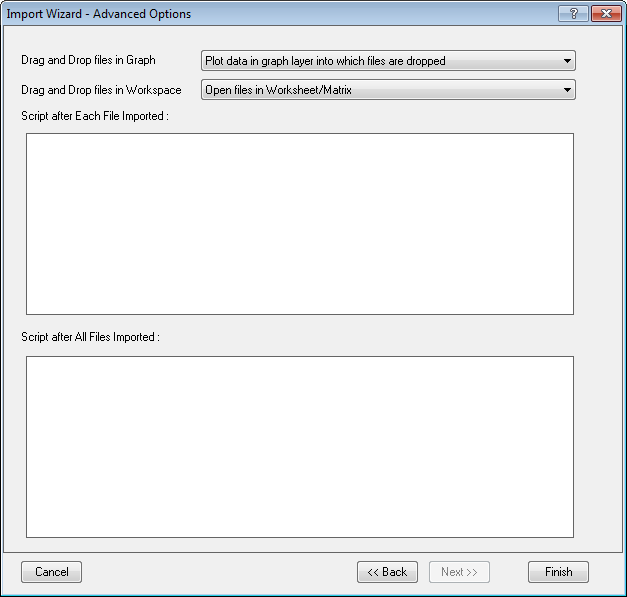

Importassistent, Seite Erweiterte Optionen
ImpWiz-AdvanOptPage
Diese Seite ist nur sichtbar, wenn Sie das Kontrollkästchen Fortgeschrittene Filteroptionen festlegen auf der Seite Filter speichern des Importassistenten aktiviert haben.
Verwenden Sie diese Seite, um:
- festzulegen, wie Origin sich verhalten soll, wenn Sie eine Datei per Drag&Drop importieren.
- Das LabTalk-Skript festzulegen, das am Ende des Importprozesses ausgeführt werden soll.
-
|
Hinweis:
Wenn Sie auf Fertigstellen klicken, werden die Optionen angewendet und zur weiteren Verwendung in einer Filterdatei gespeichert.
|
- 
Dateien per Drag&Drop in ein Diagramm importieren
Es bestehen zwei Auswahlmöglichkeiten:
| Nicht im Diagramm zeichnen; Dateien in Arbeitsblatt/Matrix öffnen |
Diese Option ist die Standardauswahl. Wenn Sie ausgewählt ist, werden die Daten in ein Arbeitsblatt oder eine Matrix importiert (je nach dem, was auf der Seite Datenquelle des Importassistenten festgelegt ist). Es wird kein Diagramm erstellt. |
| Daten in Diagrammlayer, in den die Dateien per Drag&Drop hineingezogen werden, zeichnen |
Alle importierten Datenspalten werden in den Layer gezeichnet, in den Dateien hineingezogen wurden. |
Dateien per Drag&Drop in den Arbeitsbereich importieren
Vier Möglichkeiten sind verfügbar:
- Dateien in Arbeitsblatt/Matrix öffnen Es werden keine Diagramme erstellt.
- Daten in Diagramm mit allen Dateien in einem Layer zeichnen
- Daten in Diagramm mit mehreren Feldern mit jeder Datei in einem Feld zeichnen
- Daten in mehrere Diagrammfenster mit jeder Datei in einem Diagramm zeichnen
Skript nach jeder importierten Datei
Geben Sie in dieses Textfeld den LabTalk-Code ein, der am Ende des Importprozesses nach jeder Datei ausgeführt werden soll, oder kopieren Sie ihn. Der Code wird mit dem OIF gespeichert und jedes Mal ausgeführt, wenn der Filter angewendet wird. Dies liefert eine einfache Möglichkeit, Daten am Ende des Importprozesses automatisch nachzubearbeiten.
Skript nach allen importierten Dateien
Geben Sie in dieses Textfeld den LabTalk-Code ein, der am Ende des Importprozesses ausgeführt werden soll, nachdem alle Dateien importiert worden sind, oder kopieren Sie ihn. Der Code wird mit dem OIF gespeichert und jedes Mal ausgeführt, wenn der Filter angewendet wird. Dies liefert eine einfache Möglichkeit, Daten am Ende des Importprozesses automatisch nachzubearbeiten.
Beispiel 1: Sie möchten die Spalten 1 und 2 nach dem Datenimport vertauschen. Dazu geben Sie das folgende Skript ein:
temp=col(1); col(1)=col(2); col(2)=temp; del temp;
Beispiel 2: Sie möchten die Spalte 2 zur Spalte 1 hinzufügen und dann die Spalte 2 löschen. Dazu geben Sie das folgende Skript ein:
col(1)+=col(2); del col(2);
Beispiel 3: Sie möchten mehrere Dateien als neue Zeilen importieren und anschließend einige Operationen an einer bestimmten Spalte ausführen. Um dies zu tun, können Sie das LabTalk doc-Objekt verwenden, um die letzte Datei zu erkennen.
// Check if last file has been imported // Check if last file has been imported if( doc.dropindex == doc.dropcount ) { // Do stats on a column for example stats col(2); type -a Mean value of column 2 is: $(stats.mean); }
 |
Es gibt eine schnelle Möglichkeit, ein bedingtes Kontroll- oder Schleifenskript zu laden, wenn Sie Skript in die Felder Skript vor Datenschleife auswählen bzw. Skript nach allen importierten Dateien eingeben. Klicken Sie mit der rechten Maustaste auf das Bearbeitungsfeld, um Bedingt/Schleife unten im Kontextmenü auszuwählen und dann eine gewünschte bedingte Struktur oder Schleife im Ausklappmenü. Die Syntax wird beim Cursor mit einfachen Kommentaren hinzugefügt.
|
|
Hinweis:
Beachten Sie, dass Sie auch Origin C-Funktionen und X-Funktionen aufrufen können, um Nachbearbeitungen durchzuführen. Wenn Origin C-Funktionen aufgerufen werden, sollten sie in Ihrem Arbeitsbereich bereits erstellt und eingeschlossen sein.
|